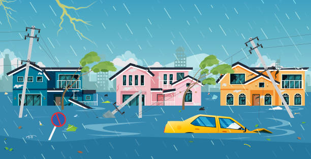

Áreas de Risco de Enchente
É fundamental conhecer as áreas mais suscetíveis a enchentes para se preparar adequadamente. As regiões mais vulneráveis geralmente apresentam as seguintes características:
- Áreas próximas a rios e córregos.
- Regiões de encosta com risco de deslizamento.
- Bairros com histórico de alagamentos frequentes.
- Locais com sistemas de drenagem deficientes.
*Sempre observe as informações da Defesa Civil local e as sinalizações específicas de sua cidade.*
